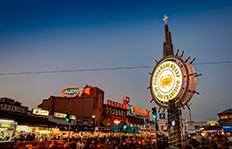
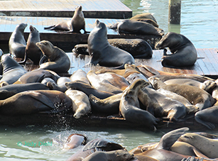

Le Quai des pêcheurs
Le Fisherman's Wharf (« Quai des pêcheurs ») est un quartier de la ville de San Francisco en Californie (États-Unis). Oui, il y a bel et bien des pêcheurs à Fisherman's Wharf. Vous trouverez une poignée de bateaux de pêche érodés qui dansent sur l'eau, amarrés aux quais, et partent au large pour attraper des crabes dormeurs et d'autres fruits de mer près de la baie, comme ils le font depuis plus d'un siècle. Les lève-tôt pourront les observer décharger leurs prises au Pier 47, surnommé Fish Alley. Si vous n'êtes pas matinal, vous pourrez tout de même savourer ces fruits de mer : essayez le crabe frais cuit dans les marmites d'eau bouillante qui jalonnent les trottoirs (le crabe fendu trempé dans le beurre fondu, avec une miche de pain au levain est une délicieuse tradition de San Francisco). Et si vous aimez acheter des souvenirs kitch (qui pourrait se passer d'une « boîte de brume » ou d'une coiffe en pinces de crabe ?), vous trouverez votre bonheur à Fisherman's Wharf.
Faune et flore
Le quartier s'étend de la rive nord de San Francisco à Ghirardelli Square au sud, et de Van Ness Street East à Pier 39 d'est en ouest. Très prisé des touristes de partout autour du monde, ce secteur est en partie célèbre pour ses différents musées, dont celui de la Marine, ses restaurants situés sur le front de mer servant du crabe et ses ferries qui assurent la liaison avec l'île d'Alcatraz. D'autres lieux touristiques de la ville comme Chinatown, Lombard Street ou North Beach sont situés à proximité. Le plus connu est le Pier 39 avec le San Francisco Maritime National Historical Park, le centre commercial de Cannery, le Ghirardelli Square, le musée Ripley's Believe It or Not!, le Musée Mécanique, le musée de cire et Forbes Island. Côté restauration, des kiosques servent des fruits de mer et plus précisément des Crabes de Dungeness et des clam chowder servis dans un bol à pain à levain. Certains restaurants, tel que le Pompeii's et Alioto's #8, appartiennent à une même famille depuis au moins trois générations. Près de Pier 45, il y existe une chapelle en mémoire des pêcheurs perdus de San Francisco et de la Californie du Nord. Elle n'est pas ouverte tous les jours, mais une fois par an, une messe est célébrée en leur honneur dans la chapelle.